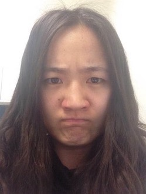
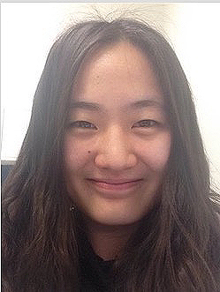

Hybrid Images_ filtered in Fourier Domain
The following images were done in additional to the general assignment to further our knowledge of Hybrid Imaging. This is image filtering in Fourier Domain.
The point in doing this is that I can't directly make Fourier Transform to a color image. So I first made Fourier Transform to R, G, B separately, and then combined them together.
There are two advantages of filtering in Fourier Domain: Firstly, it's much faster; and secondly, it will generate better images (because the kernel size is as large as the original image).


Extra Images
The following images were done in additional to the general assignment to further our knowledge of Hybrid Imaging.

